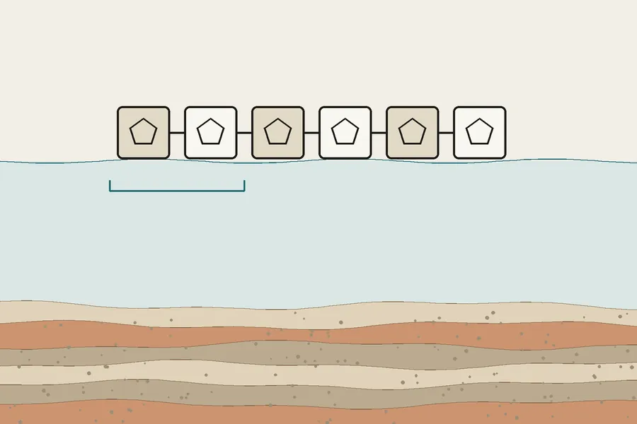

Paper · 4 Jul 2026
Critics say assembly theory reduces to dictionary compression
Ozelim, Uthamacumaran, Abrahão, Hernández-Orozco et al. · npj Complexity

In a sentence
The latest round of the assembly-theory dispute: critics say the 2025 defence used incomplete controls.
In plain words
Assembly theory proposes a number, the assembly index, that counts how many joining steps a molecule needs; its authors say high values in large amounts mean life. In 2025 they argued the index is not just a file-compression score. This reply reruns and extends their examples and says that, once proper comparisons are added, the index behaves like ordinary dictionary compression and adds nothing new.
Technical detail
Reply to Kempes et al. 2025 (npj Complexity 2:27, doi:10.1038/s44260-025-00049-9), which argued the assembly index sits in a different computational complexity class from Shannon entropy, Huffman and LZW. Ozelim et al. say the defence's experiments are incomplete as controls, that extended versions overlap with dictionary-based statistical compression, and restate their earlier claim of equivalence to the Shannon entropy rate (Abrahão et al. 2024, PLOS Complex Systems, doi:10.1371/journal.pcsy.0000014). Earlier rounds: Hazen et al. 2024 (minerals up to index 21) and the Walker et al. 2024 reply (doi:10.1098/rsif.2024.0367).
What we take from it
Planned test
Both sides argue in theory. Our task #7 settles one part with data: does assembly index separate biotic from abiotic mass-spec samples better than molecular weight or LZ complexity alone?
Source checked against its DOI. Read the original.